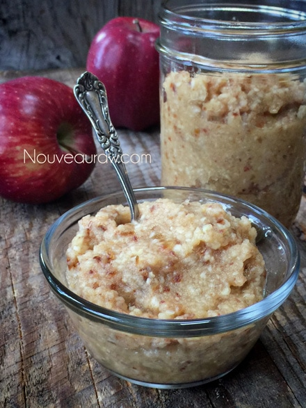

Homemade Country- Style Apple Sauce

~ raw, vegan, gluten-free, nut-free ~
Easy to make – check! Simple ingredients – check! Healthy for you – check! Kid / Husband approved – CHECK!
Last week I purchased 10 lbs of organic apples. The next day my husband brought home about 5 more pounds of apples, forgetting that we already had some in the house.
For days these apples were staring at me, I swear they were giving me the stink eye. We couldn’t eat them fast enough so I got busy making recipes with apples in them.
I was down to the very last few when it hit me…Dah! Just make some simple apple sauce! Keep in mind that different apples lend different flavors.
Selecting the Best Apple
The following apples are best to enjoy in their raw state, which works well in the raw apple sauce are the; gala, Honey Crisp (can be watery), Cameo, Fuji, McIntosh, Jonathan, Golden & Red Delicious, Ambrosia, Jonagold, and Pink Lady (my favorite). When making your applesauce, it doesn’t have to be limited to just these apples… you can also use tart apples if those make your mouth water. Enjoy all the different flavors.
Below, I shared with you some tips about either making smooth or chunky apple sauce. In the photos that I provided, I made a slightly chunky version. I peeled the apples, so in case you are wondering what the brownish flecks are in the sauce… that is the dates. As the apple sauce sits in the fridge, the apples (if juicy to begin with) may continue to release some water. If this happens, just stir it in before serving.
Yields 2 cups
- 2 fresh apples
- 5 Medjool dates (pitted)
- 1 Tbsp lemon juice
- 1/2 tsp ground Ceylon cinnamon
- 1/4 cup water (read below)
- Pinch Himalayan pink salt
Preparation:
- Peel, core and rough chop your apples.
- You can leave the skins on for added nutrients but only if organic. Just be aware that it will leave red flakes in your sauce.
- In a blender or food processor combine the apples, dates, lemon juice, cinnamon, water, and salt. Blend until nice and smooth.
- Smooth apple sauce – use the blender and add the water to create a smooth apple sauce.
- Chunky apple sauce – use a food processor and pulse the batter without adding the water, leaving it slightly chunky for that country apple feel.
- Store in mason jars in the fridge for 3-5 days. I don’t recommend freezing.

Red Delicious – Most popular variety and America’s favorite eating apple. Striped to solid red in color, with rich, sweet, mellow taste. Suitable for snacks and salads, not recommended for pies or cooking. Most widely available of all varieties can be purchased year round nationwide.
Golden Delicious – Yellow color, rich, tangy, sweet, juicy flavor. Texture and shape similar to Red Delicious. Resists browning when sliced. All purpose apple. Desirable for salads, snacks, fresh desserts, and baking. Available all year.
McIntosh – Mixed red and green coloring. Tart, tender, and juicy flavor. Excellent for eating fresh, not recommended for baking. Available mainly in the east and midwest from September until late spring.
Rome Beauty – Red and red-striped skin. A firm with medium-tart to sweet taste. Best for baking and cooking. Available nationwide from October until July.
Granny Smith -Green coloring, moderately tart and very firm, all-purpose apple. Available nationwide year-round.
Jonathan – Light red stripes over yellow or deep red darkening to purple in areas. Rich semi-tart flavor. All-purpose apple. Available September until spring mainly in the midwest.
© AmieSue.com